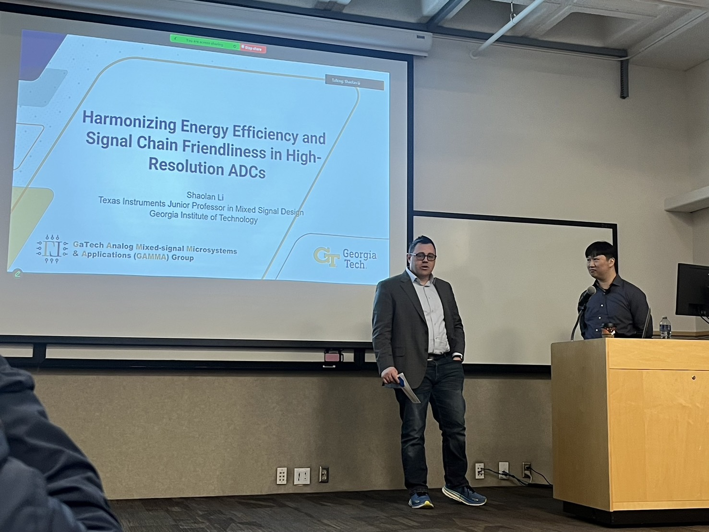
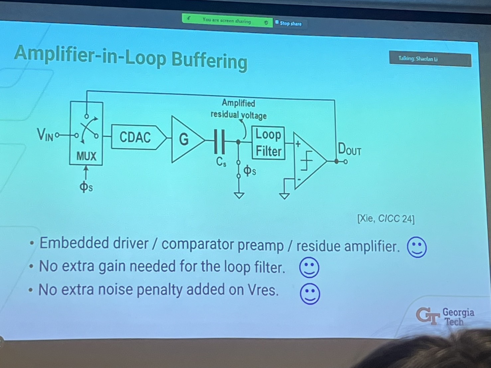
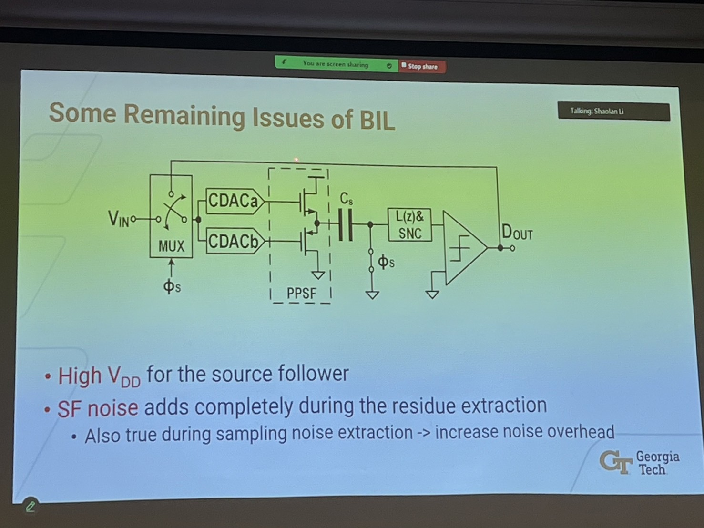

Harmonizing Energy Efficiency and Signal Chain Friendliness in High-Resolution ADCs
Written by Morris Fan on Jan. 24, 2025 @ UC San Diego JSOE
Shaolan Li @ GaTech

Signal Chain Friendliness refers to how easily your ADC can be driven.
The Need for Energy-Efficient High-Resolution ADCs
- Classic readout chain
- Direct-digitizing approach
High-Resolution ADC State of the Art
Rough ADC Driver Power Estimate
- Assume a 2-stage Miller OTA
- State of the Art (SoTA) ADCs consume only 100-200 µW in this frequency range
- The driver itself consumes even higher power
Research Goal
- Develop a high-resolution, energy-efficient ADC
Starting Point
Thermal Noise
- Sampling capacitance at the front
- α⋅k⋅T/Cin, we aim for low Cin as k⋅T is fixed for bio circuits; the only variable we can change is α
- Scaling (penalty) factor α depends on both architecture and circuit implementation, presenting opportunities for innovation at different levels
Noise Shaping SAR Quick Introduction
- Combines the best aspects of SAR and delta-sigma
- Requires large oversampling ratio; the SAR provides sufficient, met-driven burden
- Active integrator-based loop filter
- Switched capacitor
- Aggressive Noise Transfer Function (NTF)
- 2kT/Cdac
- Fully passive loop filter
- No explicit gain, no active amplifiers
- Mild NTF
- 5−10kT/Cdac
- Noise penalty closely tied to sampling capacitance
- Trade-off between shaping effectiveness and complexity
- Both approaches require sizing the capacitance to minimize noise
Low Noise Penalty Architecture
Dynamic-Amp Oriented Noise Shaping (NS) SAR
- Dynamic open-loop amplifier based (OLDA)
- Noise becomes 2kT/A⋅Cload
- Decouples LF noise from CDAC
- Input is small anyway
- 2nd order NS-SAR with NTF optimization
- Single-OLDA 3rd order NS-SAR
- No need to change the gain, but adding another capacitance to increase the order
- Floating inverter OLDA
- Completely open-loop operation
- Self-quenched, gain self-stabilized, no timer needed (risky)
- CRSV and output and the supply
- Gain is controllable by capacitance
- G=(α⋅CRSV⋅ΔVs)/(CL⋅Vt), ΔVs=200mV
- ΔVs depends on the process
- Power comes from the current passing through the CRSV, with only 200mV across the cap, not too large
Summary
- OLDA separates loop filter noise from sample cap
- Great energy efficiency
- Effective noise shaping
- We aim for α close to 2
- Smaller DAC with fewer caps => less power consumption
Can We Actually Build Low OSR NS-SAR ADCs?
- Need high loop filter order
- Need decent integrator
- Use fourth order to push back the bandwidth
Breaking the Noise-Capacitance Trade-Off
Sampling kT/C Noise Cancellation Techniques
- kT/C cancellation by reusing hardware
- Reuse the OLDA for noise extraction
- Charge sharing to perform the cancellation, low cost
- kT/C cancellation steps
- Reduce the gain of amplifier to lower its own noise, achieving 8~16dB of gain reduction
- Improves both noise and track phase non-linearity
- Harmonic noise also gets attenuated; why?
Limitation of kT/C Cancellation
- Imperfect cancellation
- In reality...
- Path gain changes due to DA, Ccap mismatches, and parasitics
- Limits the reduction of CDAC
- DA noise overhead
- An extra kT/GC during the noise extraction process
- Timing overhead
Implement the buffer within the ADC itself

Concept of Buffer in the Loop (BIL)
- Doubles sampling noise: CDAC and Cs
- Place CDAC in the signal path instead of the feedback bus
- Enables CDAC noise cancellation after buffering

- Push-pull source follower buffer
- Increases energy efficiency
Why not consider chopping?
Amplifier as Buffer in a Two-Stage Pipelined ADC
- They have an interstage gain amp
- Why not use it to buffer the input?